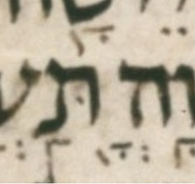

| bcv (link to tanach.us) | 2k19:31 |
| MPK | ◌ְ◌ָ◌֖◌◌ |
| qere | צְבָא֖וֹת |
| at issue | וֹ |
| at issue English | added a ḥolam malei dot to vav |
| folio col line | 216A 3 22 |
The MPK has no letter to carry a ḥolam dot for the qere’s vav. The MPK (points on no letters) is sheva, qamats, and tipeḥa.